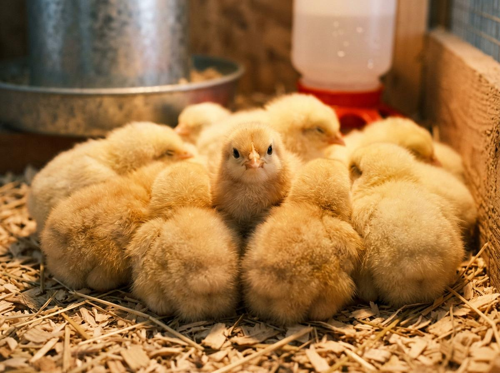

Beginner Guide
How to Start a Backyard Chicken Farm with $50
June 26, 2026
Starting a chicken farm does not require a big budget. Here is the exact step-by-step process to start with just $50 — based on real-world experience.
Read More →